A satirical field report from the front lines of pop music, polyester, and questionable dance decisions.
Welcome to the RetroVerse 1978 annual issue, assembled under strict deadlines and looser moral standards. This publication exists to honor great songs while asking hard questions, like why every third jacket had lapels wider than a sedan.
Inside these pages you will find illustrated song cards, dramatic headlines, and reporting that is technically enthusiastic. Every story has been fact checked by someone who once stood near a radio station and nodded confidently.
As always, our editorial policy is simple: celebrate the music, roast the era gently, and never pass up a chance for a pull quote that sounds like a city council emergency.
Thank you for reading. Please fold this magazine carefully, pass it to a friend, and pretend the coffee ring on page three is intentional design.
#1 in 1978: "Stayin' Alive" by Bee Gees
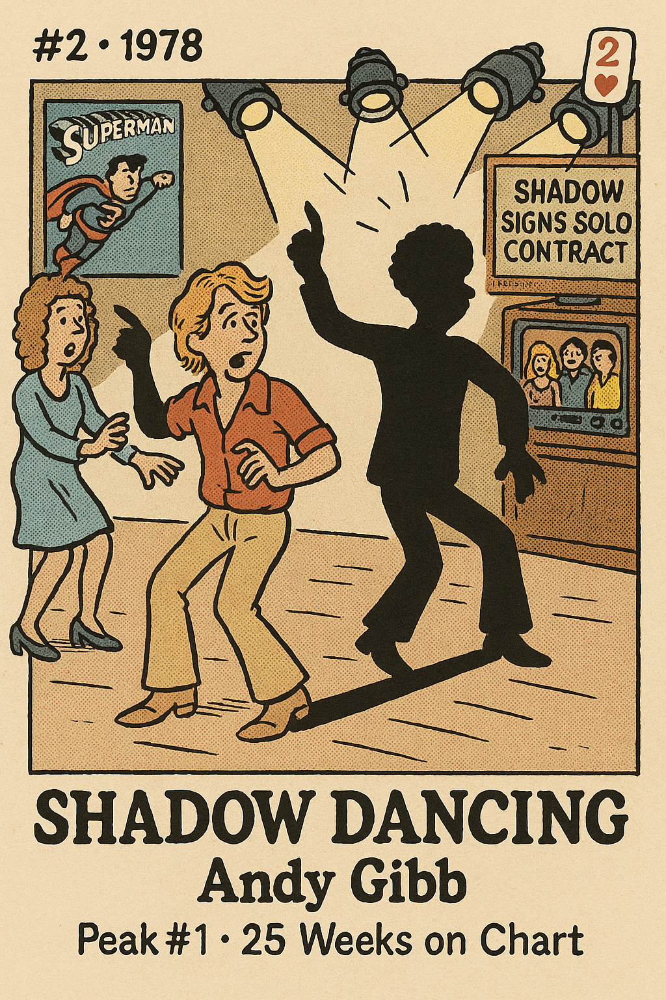
City officials met before dawn to discuss the rapid spread of 'Stayin' Alive'. By noon, every committee chair was tapping a pencil in tempo and calling it research.
Witnesses say Bee Gees arrived with excellent posture, suspicious confidence, and exactly one dramatic spotlight. Within minutes, people who had never danced were offering classes in advanced strut management.
Market analysts report that sales of sequins, platform shoes, and theatrical sighs have climbed all quarter. One banker described the movement as 'economically confusing but personally uplifting.'
#2 in 1978: "Shadow Dancing" by Andy Gibb
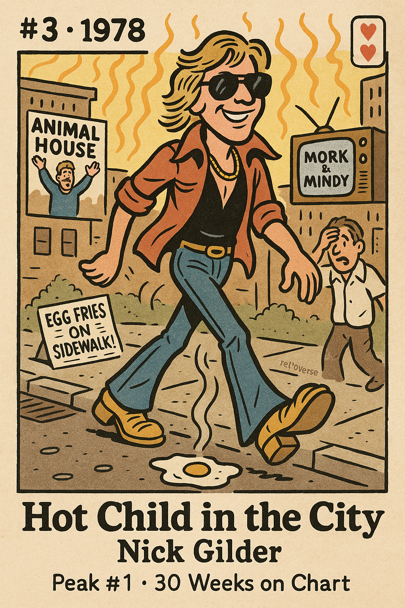
Witnesses say Andy Gibb arrived with excellent posture, suspicious confidence, and exactly one dramatic spotlight. Within minutes, people who had never danced were offering classes in advanced strut management.
Market analysts report that sales of sequins, platform shoes, and theatrical sighs have climbed all quarter. One banker described the movement as 'economically confusing but personally uplifting.'
Critics argue this all may be temporary, but nobody can hear them over the chorus of 'Shadow Dancing'. In response, readers are invited to send letters, snacks, and any spare bell bottoms to the editorial desk.
#3 in 1978: "Hot Child In The City" by Nick Gilder
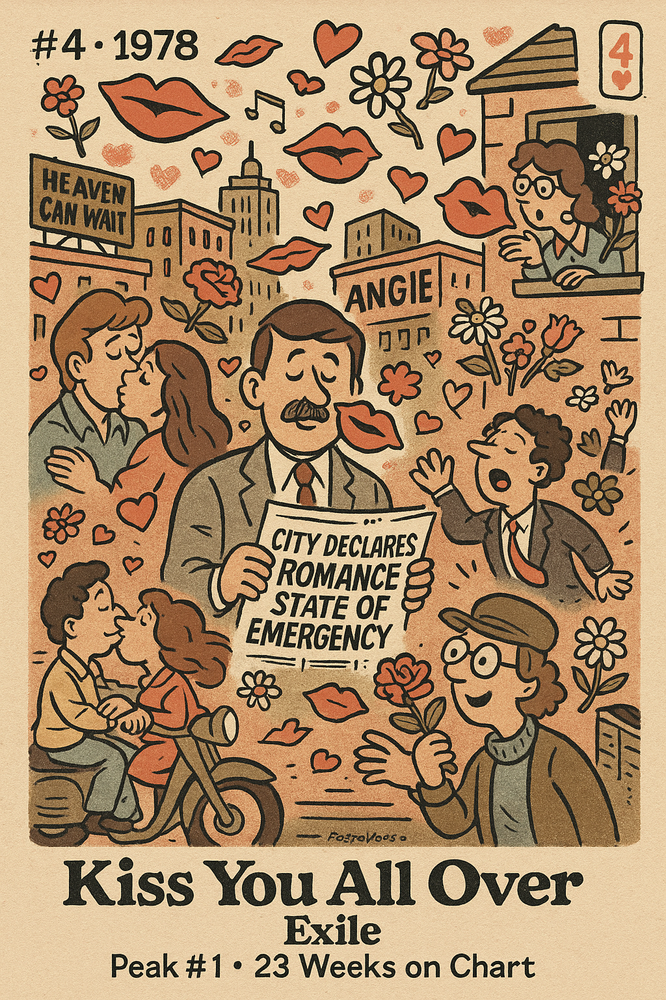
Market analysts report that sales of sequins, platform shoes, and theatrical sighs have climbed all quarter. One banker described the movement as 'economically confusing but personally uplifting.'
Critics argue this all may be temporary, but nobody can hear them over the chorus of 'Hot Child In The City'. In response, readers are invited to send letters, snacks, and any spare bell bottoms to the editorial desk.
City officials met before dawn to discuss the rapid spread of 'Hot Child In The City'. By noon, every committee chair was tapping a pencil in tempo and calling it research.
#4 in 1978: "Kiss You All Over" by Exile
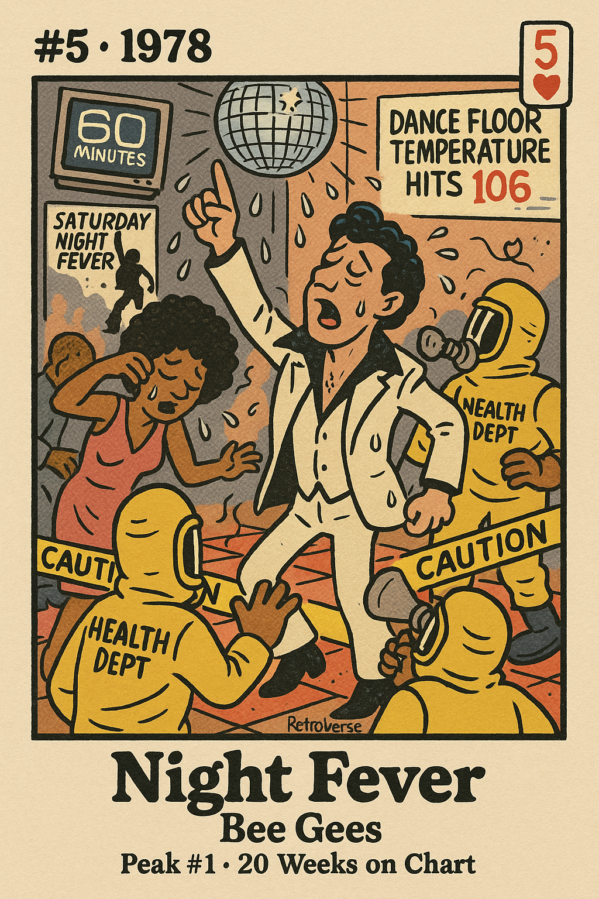
Critics argue this all may be temporary, but nobody can hear them over the chorus of 'Kiss You All Over'. In response, readers are invited to send letters, snacks, and any spare bell bottoms to the editorial desk.
City officials met before dawn to discuss the rapid spread of 'Kiss You All Over'. By noon, every committee chair was tapping a pencil in tempo and calling it research.
Witnesses say Exile arrived with excellent posture, suspicious confidence, and exactly one dramatic spotlight. Within minutes, people who had never danced were offering classes in advanced strut management.
#5 in 1978: "Night Fever" by Bee Gees
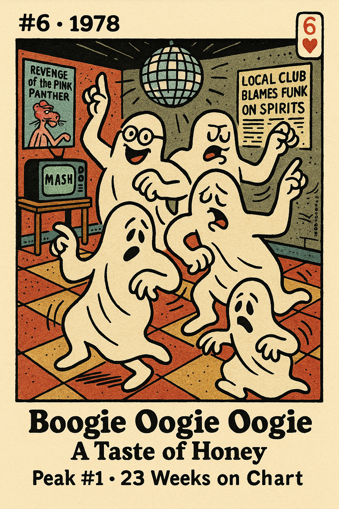
City officials met before dawn to discuss the rapid spread of 'Night Fever'. By noon, every committee chair was tapping a pencil in tempo and calling it research.
Witnesses say Bee Gees arrived with excellent posture, suspicious confidence, and exactly one dramatic spotlight. Within minutes, people who had never danced were offering classes in advanced strut management.
Market analysts report that sales of sequins, platform shoes, and theatrical sighs have climbed all quarter. One banker described the movement as 'economically confusing but personally uplifting.'
#6 in 1978: "Boogie Oogie Oogie" by A Taste Of Honey
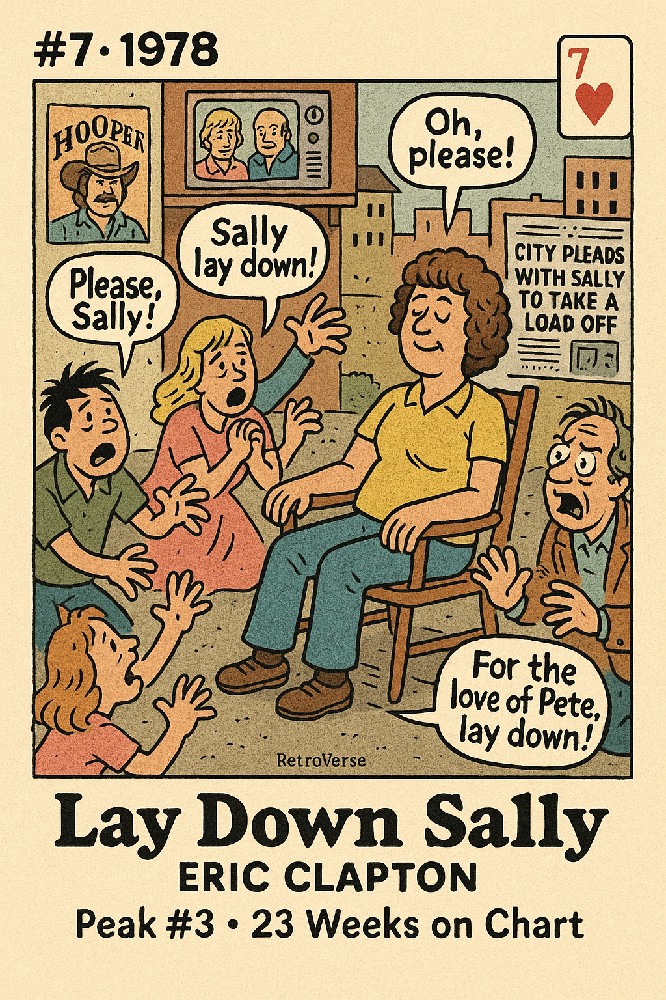
Witnesses say A Taste Of Honey arrived with excellent posture, suspicious confidence, and exactly one dramatic spotlight. Within minutes, people who had never danced were offering classes in advanced strut management.
Market analysts report that sales of sequins, platform shoes, and theatrical sighs have climbed all quarter. One banker described the movement as 'economically confusing but personally uplifting.'
Critics argue this all may be temporary, but nobody can hear them over the chorus of 'Boogie Oogie Oogie'. In response, readers are invited to send letters, snacks, and any spare bell bottoms to the editorial desk.
#7 in 1978: "Lay Down Sally" by Eric Clapton
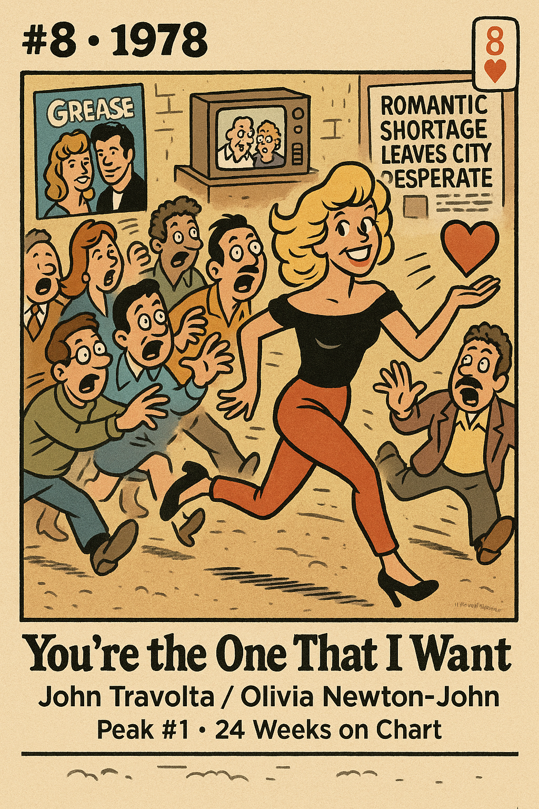
Market analysts report that sales of sequins, platform shoes, and theatrical sighs have climbed all quarter. One banker described the movement as 'economically confusing but personally uplifting.'
Critics argue this all may be temporary, but nobody can hear them over the chorus of 'Lay Down Sally'. In response, readers are invited to send letters, snacks, and any spare bell bottoms to the editorial desk.
City officials met before dawn to discuss the rapid spread of 'Lay Down Sally'. By noon, every committee chair was tapping a pencil in tempo and calling it research.
#8 in 1978: "You're The One That I Want" by John Travolta
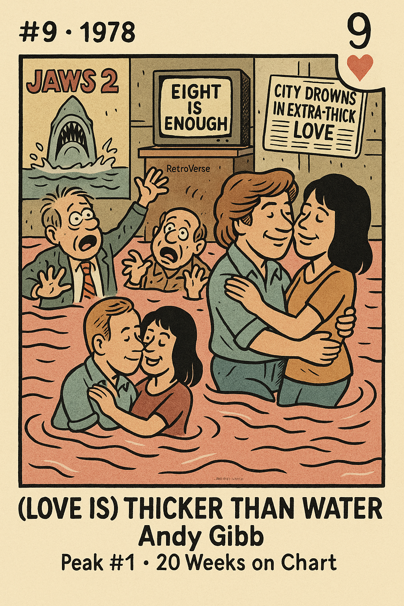
Critics argue this all may be temporary, but nobody can hear them over the chorus of 'You're The One That I Want'. In response, readers are invited to send letters, snacks, and any spare bell bottoms to the editorial desk.
City officials met before dawn to discuss the rapid spread of 'You're The One That I Want'. By noon, every committee chair was tapping a pencil in tempo and calling it research.
Witnesses say John Travolta arrived with excellent posture, suspicious confidence, and exactly one dramatic spotlight. Within minutes, people who had never danced were offering classes in advanced strut management.
#9 in 1978: "(Love Is) Thicker Than Water" by Andy Gibb
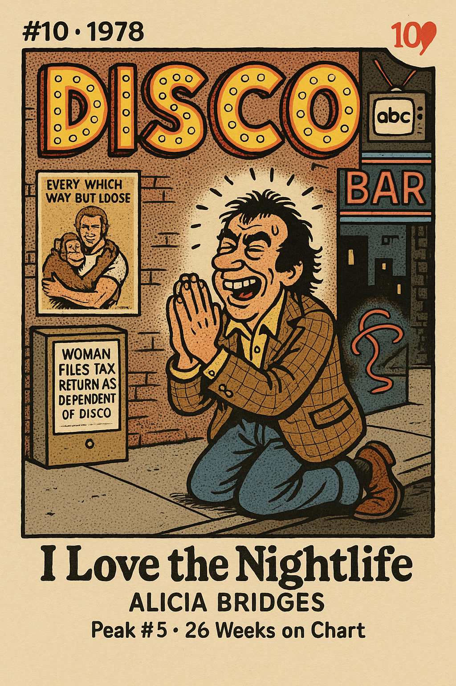
City officials met before dawn to discuss the rapid spread of '(Love Is) Thicker Than Water'. By noon, every committee chair was tapping a pencil in tempo and calling it research.
Witnesses say Andy Gibb arrived with excellent posture, suspicious confidence, and exactly one dramatic spotlight. Within minutes, people who had never danced were offering classes in advanced strut management.
Market analysts report that sales of sequins, platform shoes, and theatrical sighs have climbed all quarter. One banker described the movement as 'economically confusing but personally uplifting.'
#10 in 1978: "I Love The Nightlife (Disco 'round)" by Alicia Bridges
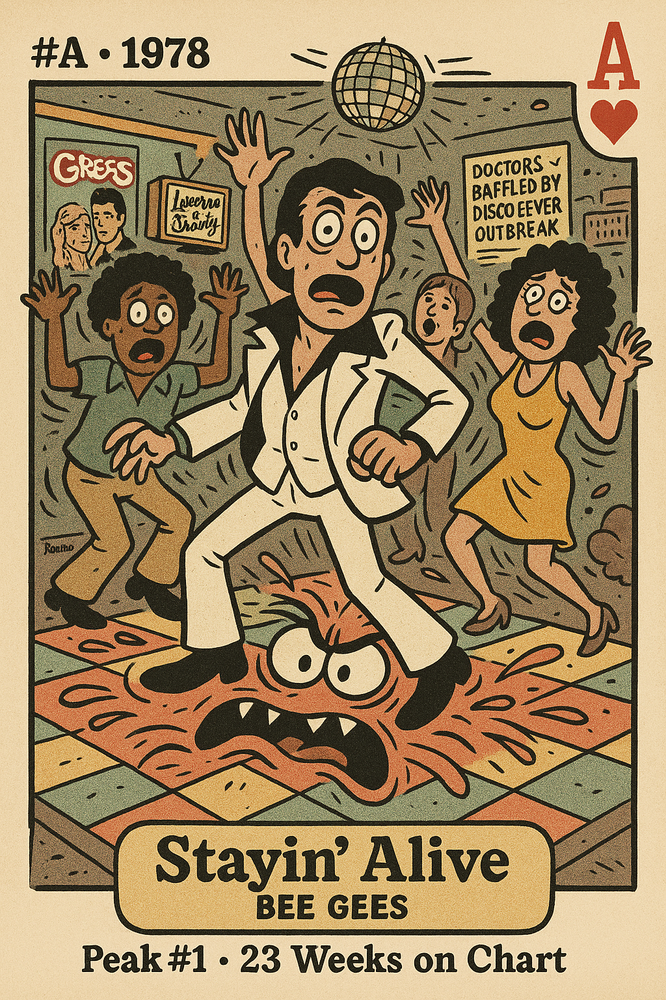
Witnesses say Alicia Bridges arrived with excellent posture, suspicious confidence, and exactly one dramatic spotlight. Within minutes, people who had never danced were offering classes in advanced strut management.
Market analysts report that sales of sequins, platform shoes, and theatrical sighs have climbed all quarter. One banker described the movement as 'economically confusing but personally uplifting.'
Critics argue this all may be temporary, but nobody can hear them over the chorus of 'I Love The Nightlife (Disco 'round)'. In response, readers are invited to send letters, snacks, and any spare bell bottoms to the editorial desk.
#11 in 1978: "You Needed Me" by Anne Murray
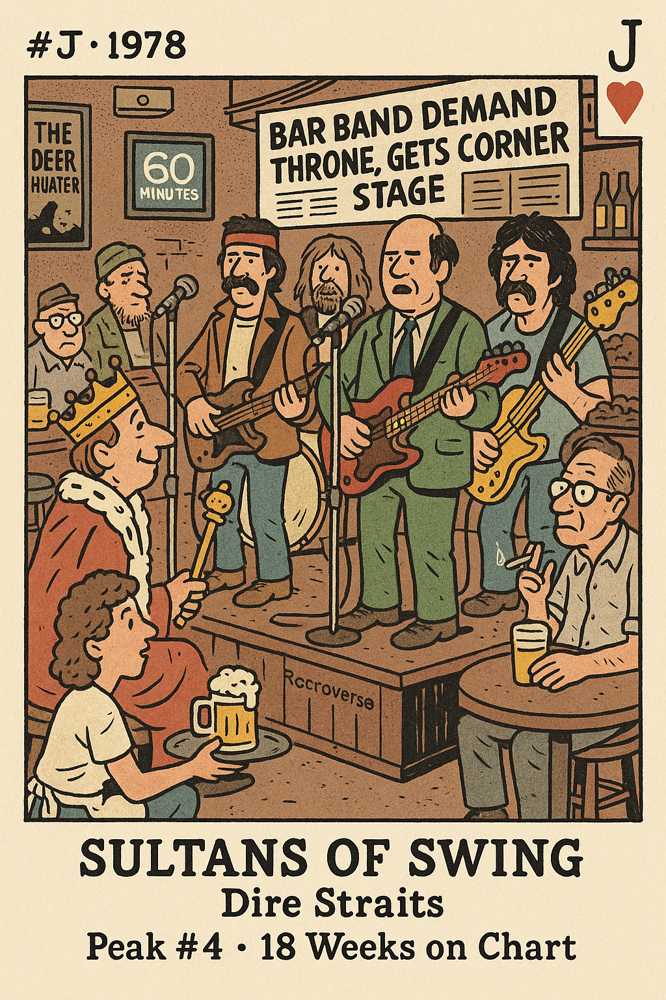
Market analysts report that sales of sequins, platform shoes, and theatrical sighs have climbed all quarter. One banker described the movement as 'economically confusing but personally uplifting.'
Critics argue this all may be temporary, but nobody can hear them over the chorus of 'You Needed Me'. In response, readers are invited to send letters, snacks, and any spare bell bottoms to the editorial desk.
City officials met before dawn to discuss the rapid spread of 'You Needed Me'. By noon, every committee chair was tapping a pencil in tempo and calling it research.
#12 in 1978: "Three Times A Lady" by Commodores
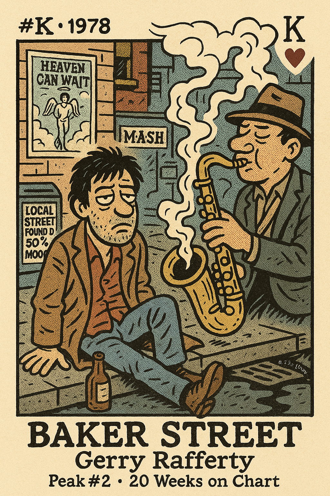
Critics argue this all may be temporary, but nobody can hear them over the chorus of 'Three Times A Lady'. In response, readers are invited to send letters, snacks, and any spare bell bottoms to the editorial desk.
City officials met before dawn to discuss the rapid spread of 'Three Times A Lady'. By noon, every committee chair was tapping a pencil in tempo and calling it research.
Witnesses say Commodores arrived with excellent posture, suspicious confidence, and exactly one dramatic spotlight. Within minutes, people who had never danced were offering classes in advanced strut management.
#13 in 1978: "Grease" by Frankie Valli
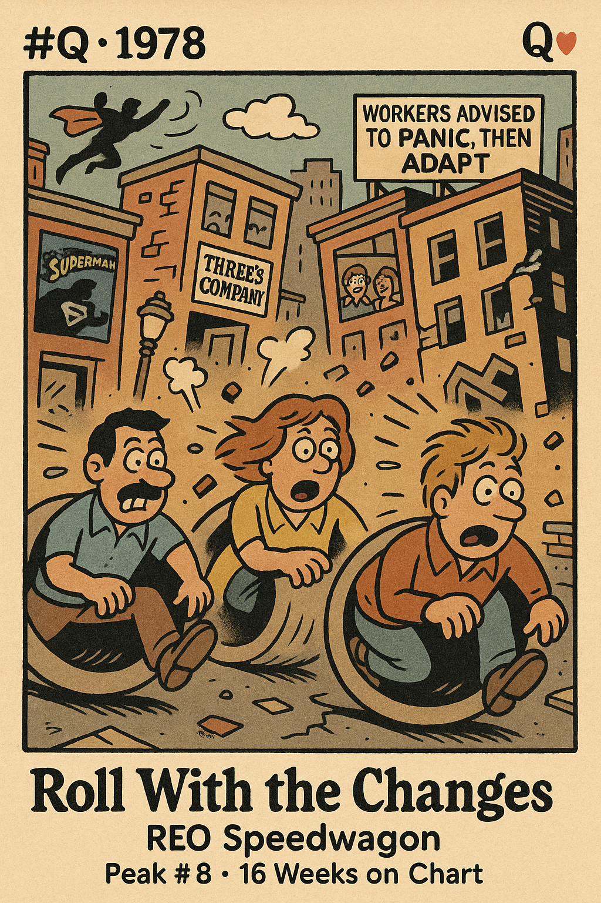
City officials met before dawn to discuss the rapid spread of 'Grease'. By noon, every committee chair was tapping a pencil in tempo and calling it research.
Witnesses say Frankie Valli arrived with excellent posture, suspicious confidence, and exactly one dramatic spotlight. Within minutes, people who had never danced were offering classes in advanced strut management.
Market analysts report that sales of sequins, platform shoes, and theatrical sighs have climbed all quarter. One banker described the movement as 'economically confusing but personally uplifting.'
#14 in 1978: "If I Can't Have You" by Yvonne Elliman
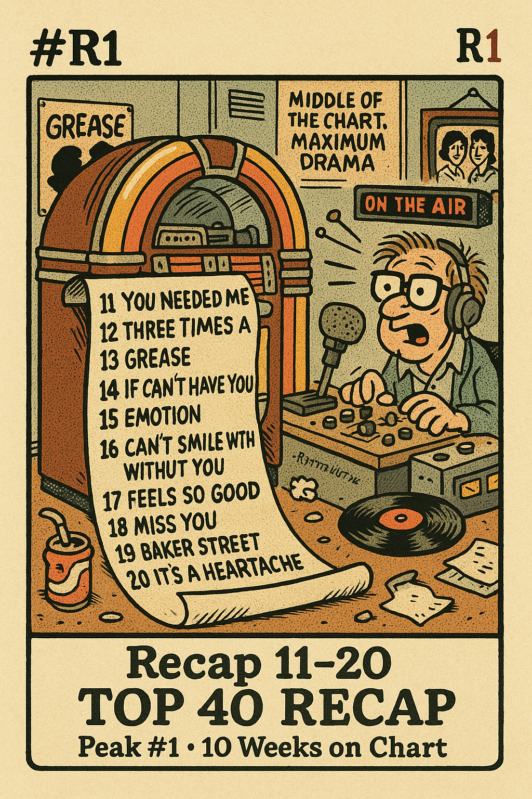
Witnesses say Yvonne Elliman arrived with excellent posture, suspicious confidence, and exactly one dramatic spotlight. Within minutes, people who had never danced were offering classes in advanced strut management.
Market analysts report that sales of sequins, platform shoes, and theatrical sighs have climbed all quarter. One banker described the movement as 'economically confusing but personally uplifting.'
Critics argue this all may be temporary, but nobody can hear them over the chorus of 'If I Can't Have You'. In response, readers are invited to send letters, snacks, and any spare bell bottoms to the editorial desk.
#15 in 1978: "Emotion" by Samantha Sang
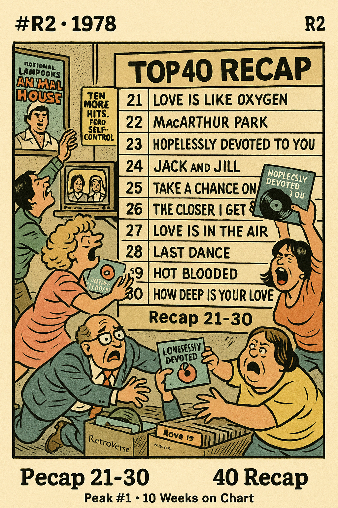
Market analysts report that sales of sequins, platform shoes, and theatrical sighs have climbed all quarter. One banker described the movement as 'economically confusing but personally uplifting.'
Critics argue this all may be temporary, but nobody can hear them over the chorus of 'Emotion'. In response, readers are invited to send letters, snacks, and any spare bell bottoms to the editorial desk.
City officials met before dawn to discuss the rapid spread of 'Emotion'. By noon, every committee chair was tapping a pencil in tempo and calling it research.
#16 in 1978: "Can't Smile Without You" by Barry Manilow
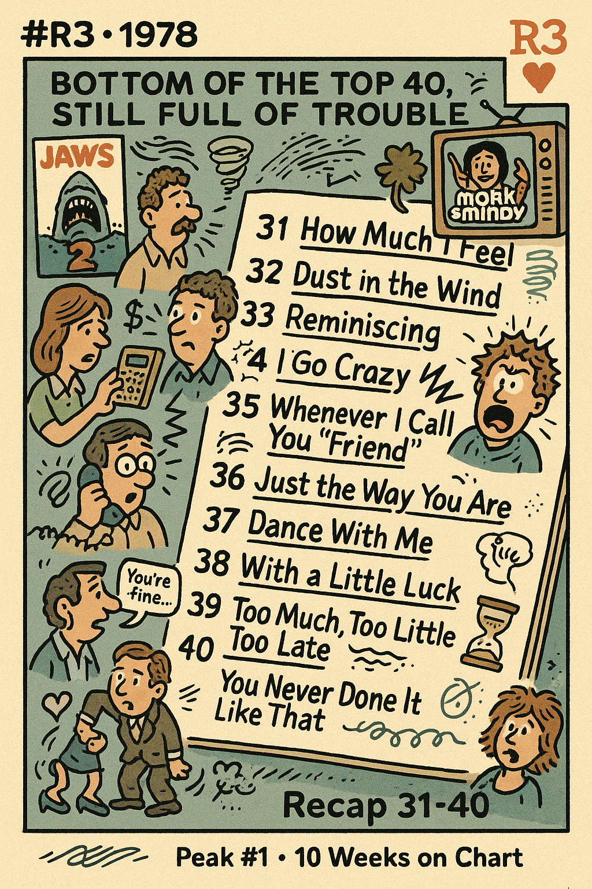
Critics argue this all may be temporary, but nobody can hear them over the chorus of 'Can't Smile Without You'. In response, readers are invited to send letters, snacks, and any spare bell bottoms to the editorial desk.
City officials met before dawn to discuss the rapid spread of 'Can't Smile Without You'. By noon, every committee chair was tapping a pencil in tempo and calling it research.
Witnesses say Barry Manilow arrived with excellent posture, suspicious confidence, and exactly one dramatic spotlight. Within minutes, people who had never danced were offering classes in advanced strut management.
#17 in 1978: "Feels So Good" by Chuck Mangione
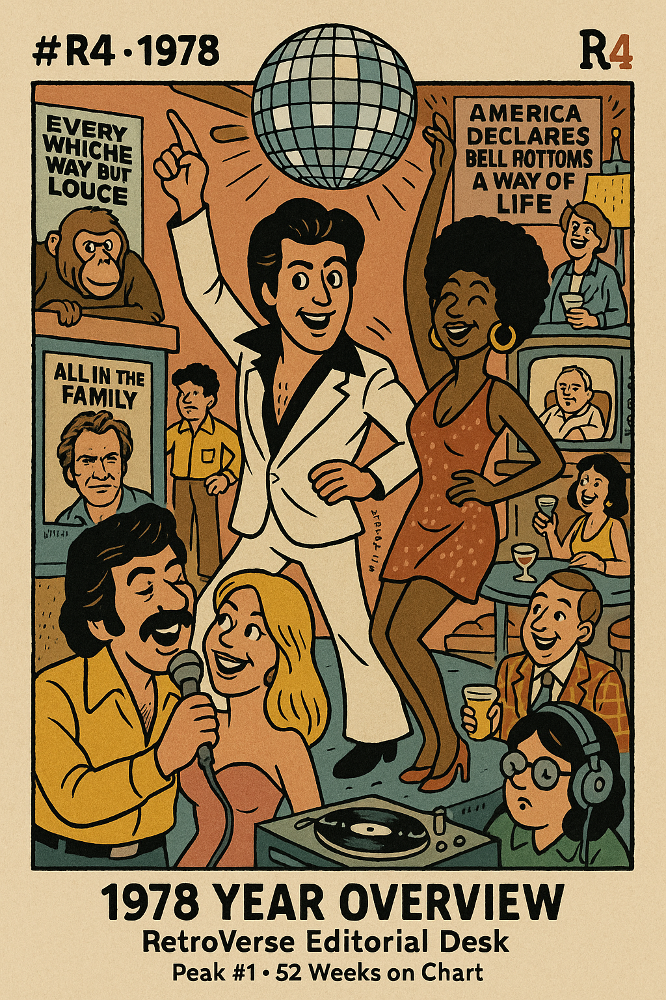
City officials met before dawn to discuss the rapid spread of 'Feels So Good'. By noon, every committee chair was tapping a pencil in tempo and calling it research.
Witnesses say Chuck Mangione arrived with excellent posture, suspicious confidence, and exactly one dramatic spotlight. Within minutes, people who had never danced were offering classes in advanced strut management.
Market analysts report that sales of sequins, platform shoes, and theatrical sighs have climbed all quarter. One banker described the movement as 'economically confusing but personally uplifting.'
The broader culture of 1978 moved at the pace of a chart climber with a horn section. Fashion became louder, television became shinier, and every dinner party eventually turned into a debate over who had the superior dance stance.
Across the country, listeners treated the Top 40 like weekly legislation. New releases were introduced with solemn ceremony, then immediately discussed with the volume and certainty usually reserved for sporting events.
This section tracks the collateral effects of hit songs: spontaneous choreography, dramatic wardrobe choices, and the rise of deeply committed air-drumming in public settings.
Please tell your writers to stop describing 'Stayin' Alive' as a municipal event. My entire block now rehearses choreography after 9 PM.
Your coverage of 'Shadow Dancing' was unfair. We were not loitering. We were conducting field research with glitter and conviction.
After your last issue, people asked if 'Hot Child In The City' comes with legal guidance. It does not, but sales are excellent.
Thank you for writing. We hear your concerns and promise to increase both nuance and horn sections in future reporting.
Data shown below is used for structure and can be replaced or extended when richer AI-authored copy is ready.
| Rank | Song | Artist | Peak | Weeks |
|---|---|---|---|---|
| 1 | Stayin' Alive | Bee Gees | 1 | 23 |
| 2 | Shadow Dancing | Andy Gibb | 1 | 25 |
| 3 | Hot Child In The City | Nick Gilder | 1 | 30 |
| 4 | Kiss You All Over | Exile | 1 | 23 |
| 5 | Night Fever | Bee Gees | 1 | 20 |
| 6 | Boogie Oogie Oogie | A Taste Of Honey | 1 | 23 |
| 7 | Lay Down Sally | Eric Clapton | 3 | 23 |
| 8 | You're The One That I Want | John Travolta | 1 | 24 |
| 9 | (Love Is) Thicker Than Water | Andy Gibb | 1 | 20 |
| 10 | I Love The Nightlife (Disco 'round) | Alicia Bridges | 5 | 26 |
| 11 | You Needed Me | Anne Murray | 1 | 25 |
| 12 | Three Times A Lady | Commodores | 1 | 20 |
| 13 | Grease | Frankie Valli | 1 | 22 |
| 14 | If I Can't Have You | Yvonne Elliman | 1 | 22 |
| 15 | Emotion | Samantha Sang | 3 | 20 |
| 16 | Can't Smile Without You | Barry Manilow | 3 | 19 |
| 17 | Feels So Good | Chuck Mangione | 4 | 25 |
| 18 | Miss You | The Rolling Stones | 1 | 20 |
| 19 | Baker Street | Gerry Rafferty | 2 | 20 |
| 20 | It's A Heartache | Bonnie Tyler | 3 | 21 |
| 21 | Love Is Like Oxygen | Sweet | 8 | 25 |
| 22 | MacArthur Park | Donna Summer | 1 | 17 |
| 23 | Hopelessly Devoted To You | Olivia Newton-john | 3 | 19 |
| 24 | Jack And Jill | Raydio | 8 | 21 |
| 25 | Take A Chance On Me | Abba | 3 | 18 |
| 26 | The Closer I Get To You | Roberta Flack | 2 | 20 |
| 27 | Love Is In The Air | John Paul Young | 7 | 21 |
| 28 | Last Dance | Donna Summer | 3 | 21 |
| 29 | Hot Blooded | Foreigner | 3 | 17 |
| 30 | How Deep Is Your Love | Bee Gees | 1 | 18 |
| 31 | How Much I Feel | Ambrosia | 3 | 18 |
| 32 | Dust In The Wind | Kansas | 6 | 20 |
| 33 | Reminiscing | Little River Band | 3 | 20 |
| 34 | I Go Crazy | Paul Davis | 7 | 21 |
| 35 | Whenever I Call You "Friend" | Kenny Loggins | 5 | 20 |
| 36 | Just The Way You Are | Billy Joel | 3 | 19 |
| 37 | Dance With Me | Peter Brown | 8 | 28 |
| 38 | With A Little Luck | Wings | 1 | 18 |
| 39 | Too Much, Too Little, Too Late | Johnny Mathis/deniece Williams | 1 | 18 |
| 40 | You Never Done It Like That | Captain | 10 | 22 |